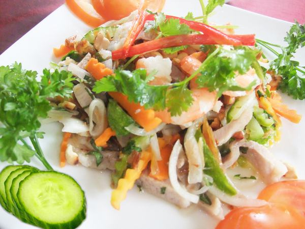

Nguyên liệu làm gỏi dưa leo tôm thịt bao gồm:
- Tôm tươi to ( 200g)
- Thịt đùi ( 200g)
- Dưa leo ( 300g)
- Cà rốt ( 1 củ)
- Hành tây ( 1 củ lớn)
- Rau dăm
- Đậu phộng
- Ớt
- Chanh
- Giấm
- Nước mắm
- Đường
- Muối
Cách làm gỏi dưa leo cuốn tôm thịt:
- Dưa leo rửa sạch, bỏ hạt, thái xắt sợi cỡ vừa. Sau đó cho ít đường, dấm, nước đá lạnh ngâm trong vòng 10 phút, vớt ra để ráo
- Cà rốt rửa sạch, gọt vỏ, thái xắt sợi cỡ vừa. Sau đó cho ít đường, dấm, nước đá lạnh ngâm trong vòng 10 phút, vớt ra để ráo.
- Tôm rửa sạch, cho lên chảo rang cùng với ít muối, sau đó bóc vỏ ( để lại đuôi)
- Thịt luộc, sau đó thái mỏng thành miếng nhỏ.
- Rau dăm nhặt rửa sạch thái nhỏ. Đậu phộng rang cho vàng thơm rồi giã nhỏ. Hành tây thái miếng nhỏ. Ớt thái miếng.
- Cho tôm, thịt, cà rốt, dưa leo, rau dăm, đậu phộng, hành tây, ớt vào bát tô to. Sau đó cho 2 thìa nước mắm, 2 thìa dấm, 2 thìa nước chanh, 3 thìa đường và 1/2 thìa muối vào đảo đều. Nêm nếm lại cho vừa ăn
- Trình bày món ăn ra đĩa, cho thêm ít đậu phộng lên trên.
Như vậy chưa đến 30 phút chúng ta đã chế biến xong món gỏi dưa leo tôm thịt rồi này. Bạn đã biết cách làm gỏi dưa leo tôm thịt chưa. Bữa ăn của cả nhà thật ngon phải không nào. Để tăng vị thêm cho khẩu phần ăn của gia đình, bạn có thể tham khảo thêm món sườn nướng cơm tấm siêu quyến rũ nha. Chúc các bạn ngon miệng ^^